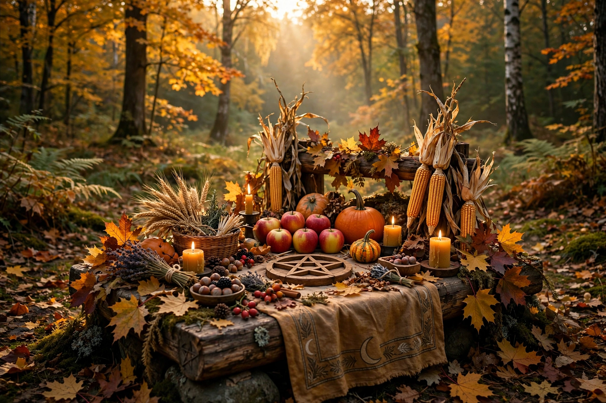

| Observed by | Wiccans, neopagans |
|---|---|
| Date | Autumn equinox, c. 21–23 September (N. Hemisphere) |
| Related to | Wheel of the Year, harvest festivals |
Mabon is a pagan religious festival and modern Wheel of the Year sabbat celebrated on the autumnal equinox. It marks the second harvest (after Lughnasadh/Lammas and before Samhain), a time of thanksgiving, balance between light and dark, and preparation for winter.
The name, from the Welsh god/hero Mabon ap Modron, was applied to the equinox festival in the 1970s, popularised by Wiccan author Aidan Kelly. There is no evidence an ancient Celtic festival by this name existed, though autumn equinox and harvest celebrations are widespread historically. Modern observances involve feasting on harvest foods, apple and wine rituals, and giving thanks.